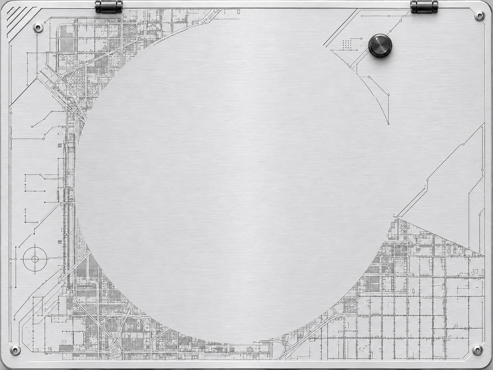

What’s
Missing?
시작하기를 누르거나 손으로 집어 주세요.
손이 인식되었습니다.
What’s Missing?
Interactive audio system
TRACK 01
What’s Missing? / Stem mix
BPM — LEFT
HAND TRACKING
● ACTIVE
○ STANDBY
USE BOTH HANDS

MASTER FILTER
LPF / CUTOFF
집고 위아래로 이동조절 중 · ↑↓
HPF / CUTOFF
집고 위아래로 이동조절 중 · ↑↓
체험 완료
선택한 소리가 없습니다.